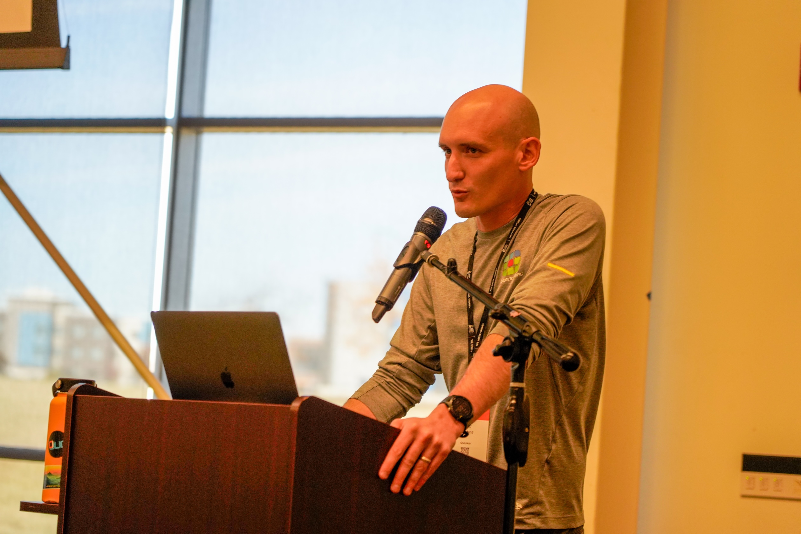

A Live, Hands-On Intro to Building with AI Agents
Kyle Hoehns · Source Allies
CIJUG · July 16, 2026
Kyle Hoehns
Staff Software Engineering Consultant · Source Allies

THE LEVELS
We'll go further than most of us are actually using it yet. Each level is a real, runnable branch in the repo.
LEVEL 0 / 5
Blank repo. One trivial endpoint. Zero AI.
Demo: this is our baseline.
LEVEL 1 / 5 · HAIKU
Ask a question, paste a snippet.
Watch: it answers, but your hands still do all the work.
LEVEL 2 / 5 · HAIKU
Describe the intent; it makes the edit.
Watch: you stop typing code and start directing it.
LEVEL 3 / 5 · SWITCH TO SONNET
It adds persistence, runs the build, and fixes its own errors.
Watch: the self-correction loop. (Gotcha next.)
mvn clean install.AGENTS.md with project context.CLAUDE.md that imports it.LEVEL 4 / 5 · SONNET
A custom skill auto-triggers and applies your conventions.
Watch: it picks the right imports without being told.
tools.jackson and relocated @AutoConfigureMockMvc. A fast model confidently used the old imports.You move up the stack, not out of the loop.
LEVEL 5 / 5 · SONNET
A skill orchestrates a team to build a feature: a 4-wide reviewer fan-out.
Watch: the parent delegates, collects, and applies fixes.
git diff HEAD). Unscoped, they flag pre-existing noise.Long sessions rot as file reads and tool output pile up. Sub-agents push that noise somewhere else.
The litmus test: are the subtasks truly independent, and is the output easy to verify? If not, keep it single-threaded.
Routing is a cost lever, not just a quality one.
Start small: pick one bounded task, let the assistant draft it, you review.
Fork github.com/kylehoehns/dugout and walk every level yourself.Questions? Let's hear them.
linkedin.com/in/kylehoehns
Scan to connect on LinkedIn — or fork the repo and walk every level yourself.